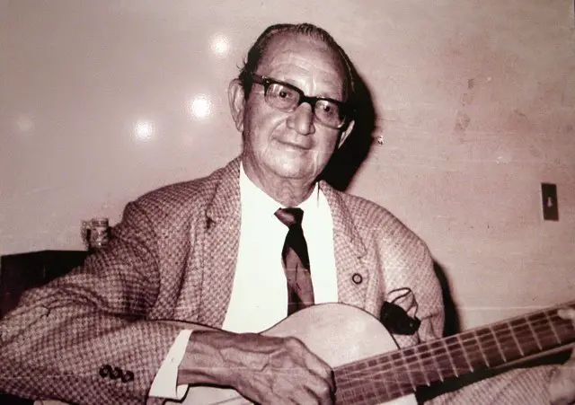

MAPA DE SAN MIGUEL

Información
San Miguel es un departamento ubicado en la zona oriental de El Salvador. Su cabecera departamental es la ciudad de San Miguel, la tercera más grande del país y un importante centro comercial, financiero e industrial. El departamento es reconocido por su economía basada en la agricultura, ganadería, comercio y turismo. Además, San Miguel es famoso por su carnaval anual, considerado uno de los eventos más grandes de Centroamérica.

Datos Históricos
El departamento de San Miguel fue fundado el 12 de junio de 1824. Su cabecera departamental, la ciudad de San Miguel, fue fundada en 1530 por el capitán español Luis de Moscoso. Durante la época colonial, San Miguel fue un importante centro de comercio debido a su ubicación estratégica en la ruta entre El Salvador y Honduras. En el siglo XX, la ciudad experimentó un auge económico con el desarrollo de la industria textil y el comercio internacional.

Lista de Municipios
- San Miguel (cabecera departamental)
- Chirilagua
- Ciudad Barrios
- Comacarán
- Chinameca
- El Tránsito
- Nuevo Edén de San Juan
- Quelepa
- San Antonio
- San Gerardo
- San Jorge
- San Luis de la Reina
- San Rafael Oriente
- Sesori
- Uluazapa
Centros Turísticos
San Miguel cuenta con diversos atractivos turísticos, entre ellos la Playa El Cuco, una de las más visitadas en El Salvador por su arena oscura y su oleaje ideal para el surf. Otro destino destacado es la Laguna de Olomega, una de las más grandes del país, perfecta para la pesca y paseos en lancha. Además, la Catedral Basílica de Nuestra Señora de la Paz en la ciudad de San Miguel es un importante ícono arquitectónico y religioso.

Lagos
Aunque San Miguel no posee grandes lagos, la Laguna de Olomega, compartida con el departamento de La Unión, es uno de los cuerpos de agua más importantes de la región. Esta laguna es un refugio de aves migratorias y un sitio popular para la pesca artesanal y el ecoturismo.

Ríos
El departamento de San Miguel es atravesado por varios ríos importantes, como el río Grande de San Miguel, que abastece de agua a varias comunidades. Otros ríos destacados incluyen el río Lempa, que bordea la región, y el río Taisihuat, que desemboca en el océano Pacífico.

Volcanes
San Miguel es hogar del Volcán Chaparrastique, uno de los más activos de El Salvador. Con una altura de 2,129 metros sobre el nivel del mar, ofrece impresionantes vistas panorámicas y es un destino popular para el senderismo. Ha tenido varias erupciones a lo largo de la historia, la más reciente en 2013, lo que lo convierte en un volcán de constante monitoreo.

Personajes Célebres
San Miguel ha sido cuna de importantes figuras históricas y culturales de El Salvador, entre ellas:Pancho Lara Músico y compositor, autor de la emblemática canción infantil "El Carbonero".
